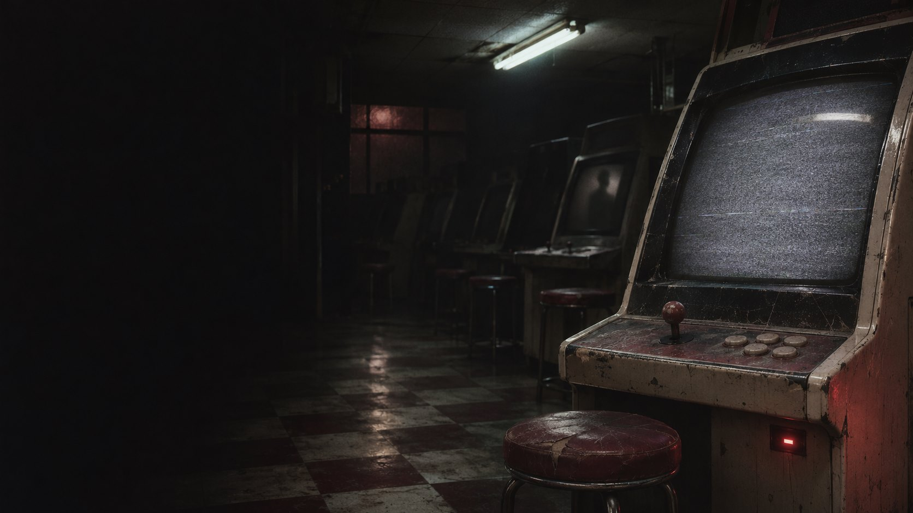

FILE 008 — VIDEO GAMES / INTERACTIVE NIGHTMARES
HORROR GAME ARCHIVE
A curated field guide to survival horror, psychological nightmares, Japanese supernatural games and landmark interactive horror.

16GAME ENTRIES
EN / RUBilingual guide
HORROR AESTHETIC / INDEX
FURTHER READING / ИСТОЧНИКИ
Efram Sera-Shrir — Tracing the Evolution of Survival Horror Videogames (conference paper)
Efram Sera-Shrir — Tracing the Evolution of Survival Horror Videogames (conference paper)